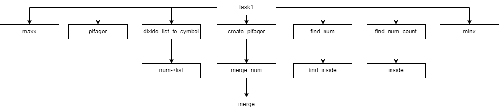
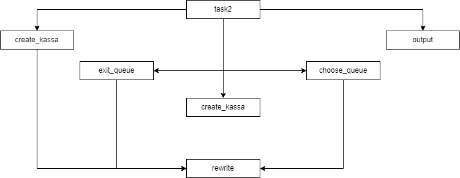
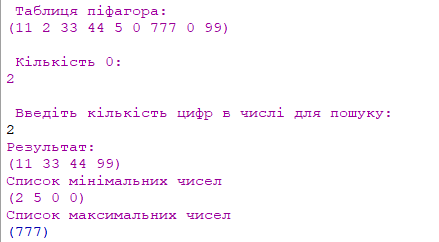
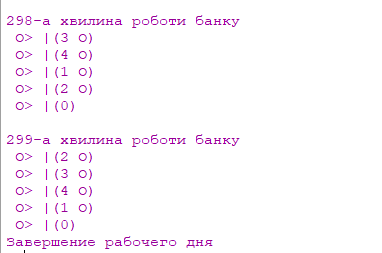

Результат з прикладом, що доступний за посиланням, тому є вірним. Всі дані виводяться правильно Результат виконання другого завдання виводить дані, згідно умовам задачі, отже є вірним.
київський національний університет ім. Тараса Шевченка
факультет інформаційних технологій
кафедра програмних систем та технологій
Дисципліна
Функціональне програмування
Лабораторна робота №4
"Програмування списків мовами функціонального програмування"
Варіант 15
Виконав: Мухатасов Борис Євгенович
Перевірила: Ніколаєнко Анастасія Юріївна
Зміст
Мета
Опанувати теоретичні основи використання списків функціональними мовами та розробити програми обробки списків.
Умови задачі
Написати процедури, що створюють список, модифікують його, здійснюють пошук та упорядкування значень. Написати процедури, що моделюють бізнес-процеси в компаніях та за допомогою різних сервісів. Бізнес-процеси подати у вигляді списків.
-
Задати дату народження у вигляді ДД.ММ.РРРР. Створити список, елементи якого складають квадрат Піфагора, що побудований за датою народження. Алгоритм побудови квадрата Піфагора. Значення, які в квадраті Піфагора відсутні, в списку записати нулями. Вивести створений список. Виконати такі операції: a) Підрахувати кількість нульових елементів; b) Знайти елементи, які містять по n (1,2,3,або 4 - задане користувачем) цифр; c) Сформувати новий список з елементів з найменшою та з найбільшою кількістю цифр.
-
Написати код, що моделює процес роботи банку. Банк має 5 кас для обслуговує клієнтів протягом робочого дня (5 годин). Інтервали часу між надходженням клієнтів складають 1 хвилину. Час обслуговування клієнтів 5 хвилин. До кожної каси формується окрема черга. Клієнт, що надійшов на обслуговування, обирає найкоротшу чергу, при цьому, якщо найкоротших черг декілька, то клієнт обирає першу. В зв’язку з тим, що керівництво банку цікавлять поточні витрати та якість послуг, що надаються клієнтам, ставиться питання про можливість зменшення кількості кас. Вивести на екран сценарій роботи кас банку та кількість кас, які залишаться в банку.
Структура програми

Рис. 1 - HIPO діаграма до завдання №1

Рис. 2 - HIPO діаграма до завдання №2
Обгрунтування вибору середовища та мови функціонального програмування
Була обрана мова програмування Scheme, так як вона має легкий, зрозумілий синтаксис, який поюснюють на лекціях, практичних, а також рекомендована лектором. IDE - DrRacket. Головною перевагою для вибору данного середовища розробки є зручність та відсутність потреби у мережі інтернет
Код програми
;....................................................15.1......................................................................
(define birthday `(0 5 1 2 1 9 7 9))
(define nums `())
(define square `())
;------------------------------------------------------------------------------
(define (num->list n)
(if (zero? n)
`()
(append (num->list (quotient n 10)) (list (remainder n 10)))))
;-------------------------------------------------------------------------------
;-------------------------------------------------------------------------------
(define (divide_list_to_symbol l) ; роздінелля списку на окремі записи
(define res `())
(define (div i i_max)
(define templist `())
(if (>= i i_max)
res
(begin
(set! templist (num->list (list-ref l i)))
(set! res (append res templist))
(div (+ i 1) i_max))))
(div 0 (length l)))
;-------------------------------------------------------------------------------
;-----------------------------------------------------------------------------
(define (pow x y); зовнішня ф-я обрахування х в степені у
(define (pow_inside x y res);внутрішня ф-я обрахування х в степені у
(if (= y 1); якщо у=1, тобто всі ітерації зроблені, то повертаємо результат
res
(pow_inside x (- y 1) (* res x))));викликаемо нову ітерацію
(pow_inside x y x))
;-------------------------------------------------------------------------------
;-----------------------------------------------------------------------------
(define (merge_num lst); склеювання массиву чисел в одне число (1 1 1) -> (111)
(define (merge i coef res)
(if (>= i (length lst))
(list res)
(merge (+ i 1) (/ coef 10) (+ res (* coef (list-ref lst i))))))
(if (<= (length lst) 1)
lst
(merge 0 (pow 10 (- (length lst) 1)) 0)))
;-----------------------------------------------------------------------------
(define (find_num lst num); пошук чисел в массиві
(define res `())
(define (find_inside i )
(if (= num (list-ref lst i))
(set! res (append res (list num))))
(if (>= i (- (length lst) 1))
(begin (if (null? res)
`(0)
res))
(find_inside (+ i 1) )))
(find_inside 0))
;-------------------------------------------------------------------------------
(define (pifagor l) ; робочі числа квадрату піфагора
(define templist `())
; перше робоче число
(define num1 (+ (list-ref l 0) (list-ref l 1) (list-ref l 2) (list-ref l 3) (list-ref l 4) (list-ref l 5) (list-ref l 6) (list-ref l 7)))
(display "\n")
;друге робоче число
(define num2 0)
(if (< num1 10) ; сума цифр числа
(set! num2 num1)
(begin
(set! templist (num->list num1))
(set! num2 (+ (list-ref templist 0) (list-ref templist 1)))))
;третє робоче число
(define num3 (- num1 (* 2 (list-ref l 0))))
;четверте робоче число
(define num4 0)
(if (< num3 10) ; сума цифр числа
(set! num4 num3)
(begin
(set! templist (num->list num3))
(set! num4 (+ (list-ref templist 0) (list-ref templist 1)))))
;результат записуэмо в масив
(set! nums (list num1 num2 num3 num4)))
;------------------------------------------------------------------------
;------------------------------------------------------------------------
(define (create_pifagor_arr l); створення массиву чисел квадрату піфагора
(define res `())
(define (create_inside i)
(set! res (append res (merge_num(find_num l i))))
res
(if (< i 9)
(create_inside (+ i 1))
res))
(create_inside 1))
;------------------------------------------------------------------------
;------------------------------------------------------------------------
(define (find_num_count lst n) ; пошук чисел за кількістью цифр в них
(define res `())
(define (inside i)
(if (>= i (length lst))
res
(begin
(if (and (= n 1) (< (list-ref lst i) 10))
(set! res (append res (list(list-ref lst i))))
(if (= (length(divide_list_to_symbol (list(list-ref lst i)))) n)
(set! res (append res (list(list-ref lst i))))))
(inside (+ i 1)))))
(inside 0))
;-------------------------------------------------------------------------
;-------------------------------------------------------------------------
(define (minx lst); пошук мінімального числа в списку
(define res 100)
(define (mi i)
(if (>= i (length lst))
res
(begin
(if (< (list-ref lst i) res)
(set! res (list-ref lst i)))
(mi (+ i 1)))))
(mi 0))
;-------------------------------------------------------------------------
;-------------------------------------------------------------------------
(define (maxx lst); пошук максимального числа
(define res 0)
(define (ma i)
(if (>= i (length lst))
res
(begin
(if (> (list-ref lst i) res)
(set! res (list-ref lst i)))
(ma (+ i 1)))))
(ma 0))
;-------------------------------------------------------------------------
(define (task1)
(pifagor birthday); робочі числа записуємо в nums
(set! nums (divide_list_to_symbol nums)); розділяємо робочі числа на окремі символи
(set! nums (append birthday nums)); об'єднуємо масиви
(set! nums (create_pifagor_arr nums)); створюємо квадрат
(display "\n Таблиця піфагора:\n")
(display nums)
(display "\n\n Кількість 0:\n")
(display (length (find_num nums 0)))
(display "\n\n Введіть кількість цифр в числі для пошуку:\n")
(define x (read))
(display "Результат:\n")
(find_num_count nums x)
(display "\nСписок мінімальних чисел\n")
(define less (minx nums))
(if (= less 0)
(find_num_count nums 1)
(find_num_count nums (length (divide_list_to_symbol (list less)))))
(display "\nСписок максимальних чисел\n")
(find_num_count nums (length (divide_list_to_symbol (list (maxx nums))))))
(task1)
;....................................................15.2.........................................
(define bank `((0)))
;----------------------------------------------------------------------------------
(define (create_kassa n); створюємо початковий масив банку
(define (cr i)
(if (< i (- n 1))
(begin
(set! bank (append bank `((0))))
(cr (+ i 1)))))
(cr 0))
;----------------------------------------------------------------------------------
;----------------------------------------------------------------------------------
(define (rewrite lst pos value); ф-я перезапису комірки списку
(define res `())
(if (not (list? lst))
(set! lst (list lst)))
(define (inside i)
(if (>= i (length lst))
res
(begin
(if (= i pos)
(if (> (length value) 1)
(set! res (append res (list value)))
(set! res (append res value)))
(set! res (append res (list(list-ref lst i)))))
(inside (+ i 1)))))
(inside 0))
;----------------------------------------------------------------------------------
;----------------------------------------------------------------------------------
(define (choose_queue); вибір, яку чергу краще зайняти
(define minx 100)
(define curr 0)
(define templist `())
(define n 0)
(define (inside i); внутрішня ф-я
(if (>= i (length bank))
(begin ;запис результату
(set! templist (list-ref bank curr)); отримуємо масив черги каси
(if (not (list? templist));перевіряємо чи отримали саме список, а не число, інакше міняємо на список
(set! templist (list templist)))
(if (=(list-ref templist 0) 0); якщо час був(0) тобто людина щойно вишла
(set! templist (rewrite templist 0 `(4)))); записуємо новий час обслуговування
(set! templist (append templist (list "O"))); записуємо схематичне зображення людини
(set! bank (rewrite bank curr templist))); записуємо в масив кас
(begin ;пошук черги
(set! templist (list-ref bank i)) ;отримання даних каси
(if (not(list? templist)) ; перевірка чи є списком
(set! templist (list templist)))
(if (< (length templist) minx) ;якщо довжина черги менша за минулу мінімальну, то зберігаємо індекс комірки на оновлюємо мінімальне значння
(begin
(set! minx (length templist))
(set! curr i)))
(inside (+ i 1)))))
(inside 0))
;-----------------------------------------------------------------------------------
;----------------------------------------------------------------------------------
(define (change_time); зміна часу обслуговування в списку кас
(define templist `())
(define (time i)
(if (< i (length bank))
(begin
(set! templist (list-ref bank i))
(if (= (list-ref templist 0) 0)
(set! templist (rewrite templist 0 `((0)))) ;якщо вже 0 то залишаємо
(set! templist (rewrite templist 0 (list (- (list-ref templist 0) 1))))); інакше зменшуємо
(set! bank (rewrite bank i templist)); запис в список кас
(time (+ i 1)))))
(time 0))
;-----------------------------------------------------------------------------------
;-----------------------------------------------------------------------------------
(define (exit_queue); вихід з черги
(define templist `())
(define (inside i)
(if (< i (length bank))
(if (> (length (list-ref bank i)) 1)
(begin
(set! templist (list-ref bank i))
(if (= (list-ref templist 0) 0)
(set! templist (rewrite templist (- (length templist) 1) `())))
(set! bank (rewrite bank i templist))
(inside (+ i 1))))))
(inside 0))
;-----------------------------------------------------------------------------------
(define (output lst time); виведення інформації
(display "\n\n")
(display time)
(display "-a хвилина роботи банку")
(define (out i)
(if (< i (length bank))
(begin
(display "\n O> |")
(display (list-ref bank i))
(out (+ i 1)))))
(out 0))
;----------------------------------------------------------------------------------
(define (task2 time x)
(create_kassa x)
(define (inside i i_max)
(if (>= i i_max)
(display "\nЗавершение рабочего дня")
(begin
(change_time)
(exit_queue)
(choose_queue)
(output bank i)
(inside (+ i 1) time)
)))
(inside 1 time))
(display "Введите количество касс\n")
(define x(read))
(task2 300 x)
Посилання на проект з вихідним кодом
GitHub проект з вихідним кодом до всіх лабораторнихСкріншоти результатів

Рис. 3 - Результат виконання першого завдання

Рис. 4 - Результат виконання другого завдання
Аналіз достовірності результатів
Висновки
В результаті роботи було вирішено два задання за допомогою мови Scheme. Було намальовано HIPO діаграми для кожного з завдань, проведено аналіз достовірності результатів, який показав що результати є вірними. Стосовно другого завдання можна сказати, що 5 касс для банку-це перебір, оскільки мало того, що черга не формується, до 5-ї касси взагалі вона не доходить. Отже є доцільним зменшити число кас до 4. З таким числом і черга формуватися не буде і кас зайвих також не буде.